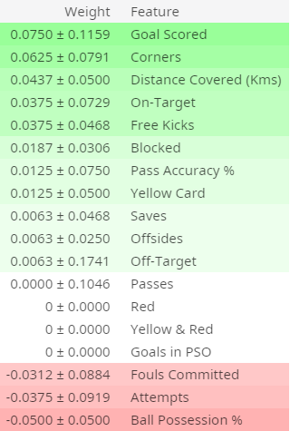

机器学习可解释性之排列重要性 Permutation Importance
本篇翻译自Kaggle机器学习可解释性微公开课🎓，本篇时第二课时，主讲机器学习可解释性中数据排列重要性的发现
Check source at Kaggle by Dan Becker, translate by waynehfut
简介 Introduction
我们对模型会问的一个基本问题是：哪个特征对最终预测影响最大？
这个概念可以被称为特征重要性。我已经在前述的诸多应用中看到为了各种目的多次高效的使用了特征重要性。
有很多种去衡量特征有效性的方法，有些方法针对上述问题的不同版本做出了微妙的回答，其他的一些方法有一定的缺陷。
fix在本节课中，我们将集中于排列重要性，相较于其他的方法，排列重要性是指：
- 快速计算
- 广泛的应用和理解
- 与我们想要进行特征重要性度量的属性保持一致
如何运作 How it Works
排列重要性在使用模型的方式与你之前所见到的有所不同，也导致了很多人一开始有所迷惑。因此我们先从一个具体的示例开始。
考虑如下的数据格式：
| Height at age 20 (cm) | Height at age 10 (cm) | ... | Socks owned at age 10 |
|---|---|---|---|
| 182 | 155 | ... | 20 |
| 175 | 147 | ... | 10 |
| ... | ... | ... | ... |
| 156 | 142 | ... | 8 |
| 153 | 130 | ... | 24 |
我们想利用一个人在10岁的身高来预测一个人在20岁时的身高。
我们的数据包括有用的特征(10岁的身高)，具有一定预测能力的特征（10岁时袜子数量），和一些我们在当前解释中不是特别关注的特征。
排列重要性在模型被训练完成后才会进行计算，因此我们不需要修改模型或者修改我们依据给定的身高和袜子数量预测出来的结果。
相反，我们会先问以下问题：如果我们随机的打乱验证集的单列数据，保留其他列的原始数据排序，那么打乱后的数据将会如何影响预测结果精度呢？

随机的重新排列单列数据可能会导致较低的预测精度，由于打乱后的数据与真实世界的数据再也没有任何关联。如果我们重度的依赖打乱的模型进行预测，模型的精度必然会受到影响。因此，打乱height at age 10必然会造成恶劣的影响，但是如果我们打乱了socks owned的话，或许结果不会受到这么大的影响。
基于这样的观点，我们将进行如下的过程：
- 获取一个预训练模型。
- 打乱其中一列，并使用打乱后的数据进行预测。使用这个预测结果与真实数据预测结果进行比较以计算打乱后数据精度受到多大影响。性能恶化的结果将衡量刚打乱列的重要性。
- 将数据重置为原有顺序（步骤2以前），接着在下一列中重复步骤2，直到你为每一列都计算了重要性。
代码示例 Code Example
我们的示例将基于一个利用球队基本指标预测哪个足球队将会诞生“最佳球员”比赛的模型。“最佳球员”奖将颁发给比赛中最优秀的球员。建立模型并不是我们当前的目的，所以下面的单元格仅仅加载数据(https://www.kaggle.com/mathan/fifa-2018-match-statistics) 并构建了一个简单的模型。
1 | import numpy as np |
我们接下来将展示如何利用eli5进行重要性计算。
1 | import eli5 |

排列重要性的解释
处于列表最顶端的是最重要的特征，其他次重要的项目紧随其后。
每一行的第一个数字展示了模型在随机打乱后的受损程度（在本例中，使用“准确性”作为评估指标）
正如大多数数据科学中的大多数情况，从混乱的列表中获得确切的性能变化有一定的随机性。我们在排列重要性中重复计算多次打乱的结果以衡量数值随机性。±符号后的数字衡量了两次打乱的性能变化区间。
你偶尔也会看到排列重要性中存在负值。在这种情况下，在打乱（或扰动）当前项的数据下预测比真实数据要更加精确。一般发生在当前项与最终预测无关时，但是随机的变化使得打乱的数据反而使得预测变得更加精确。在与我们示例相似小数据集中，这种情况非常常见，运气成分居多。
在我们的例子中，最重要的特征便是进球得分。这似乎也是合理的。球迷也许会对其他变量排序感到一丝惊讶。